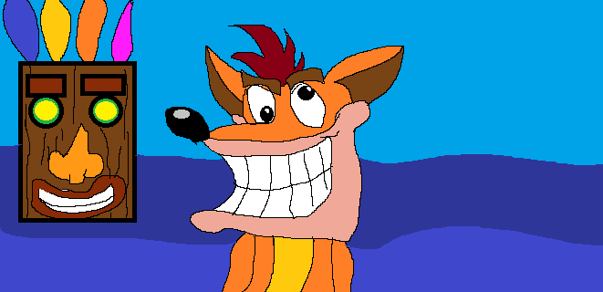
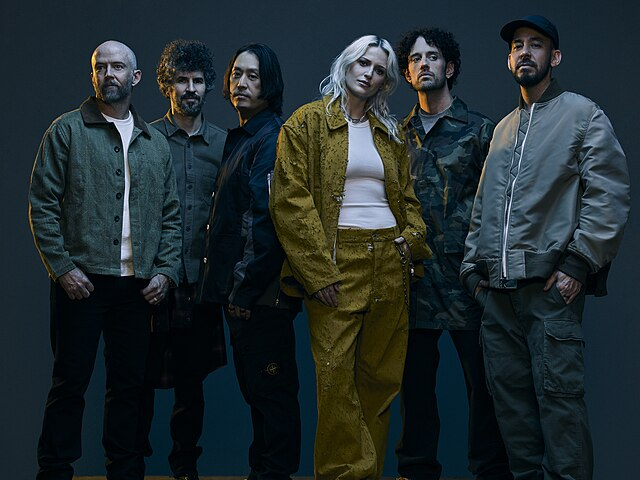
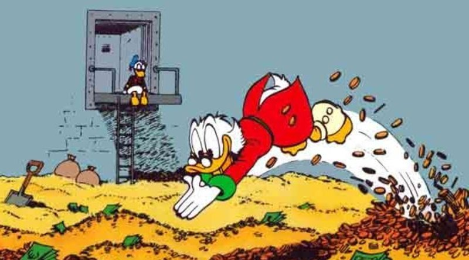

Meus interesses

Desenhos
Gosto de desenhar, apesar de não ser muito bom, mais me divirto mesmo assim. acredito que todos deveriam desenhar.

Músicas
Gosto muito de música, diria que meus gêneros preferidos são Rock e Rap, sendo minhas bandas de rock favoritas: Metalica, Nirvana, AC/DC, Queen e Legião Urbana. E no Rap meus artistas favoritos são: YUNli, kanye west, Kendrick Lamar, Edi Rock, Eminem e Ice Cube. (obs: Não listei, mais as fotos é da banda de new metal Linkin Park) futuro da IA.

Literatura
Também gosto de ler, principalmente HQ's (Histórias em Quadrinhos), como Tio Patinhas, Homem-Aranha e One Punch Man. Mas gosto de livros também como senhor dos anéis, percy jackson e outros.